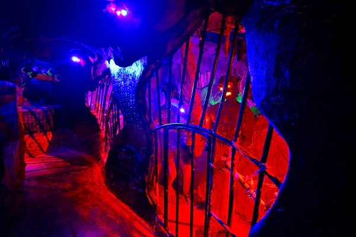

ダラット最強の珍寺、
霊福寺。
ダラット郊外のチャイマットという村にある。
入口からしてグレイトフル。
珍妙な仏塔と仏像が出迎えてくれるのです。
ダラット駅から電車で来る観光客も多いようで、皆駆け足で見ているようだが、そんな小一時間ではとても見きれない見どころてんこ盛りのお寺なのでお覚悟召されたし。
じっくり見るにはダラット市内からタクシーかGlabが良いですよ。
向かうは本堂部分。
壁がみんな陶器で出来ている。
このような壁面はベトナムの中でも陶芸が盛んな地域で見られるがここまで徹底している建物も珍しい。
さらに先に進むと巨大な観音様が。

高さは17ｍ。
コレ、よく見ると
菊の花で造られた観音様なのだ。
近づくと、小菊のドライフラワーで出来ていた。
花で出来ている17ｍの観音サマって凄くないですか？
しかもよく見ると
花で衣の花柄作ってるし。
実はダラットは菊の花の生産が盛んな土地なのだ。
このチャイマットもそうだが、ダラットの郊外はほぼ全て
巨大なビニールハウスに覆われている。
それらはほぼ花を生育しているという。
山全体がハウスに覆われている、というSFチックな光景もあちこちで見られる。
何だかスケールが大きすぎてチョット想像もつかないほど大規模なハウス生産なのだ。

ドライフラワー観音でビビっている暇はない。
陶器で埋め尽くされた仏堂を進んでいこう。
仏堂の中にはこれまた
巨大な観音像が立っていた。
周りが派手過ぎて目立たないが、3層吹き抜け分の高さなので10ｍ以上はあるだろう。
周辺には観音像がずらりと並んでいる。
さらに2階3階にも観音様が並んでいる。
まるで中央の大きな観音像を見守るかのように観音像が並んでいるのだ。

その合間合間には僧侶の像が。
造形はリアルで、最初本物のお坊さん座っているのかと勘違いしてしまったほど。
観音様のおわすお堂の隣には鐘楼がある。
内部には巨大な鐘があり、その上の階には各フロアに仏像が安置されていた。
それにしても豪華な内装だ。
相当建設費もかかっていることだろう。
正直言って、ベトナムの、決して裕福ではなさそうな地方の街の郊外に何故これだけの財を集め得る寺院が存在するのだろう？
これがホーチミンやハノイといった都市部にあるのならまだ判らなくもないのだが、ここは超地方都市ダラットのさらに郊外の田舎町なのだ。
この国には我々の知り得ないもう一つの経済原理が働いているのだろうか。謎だらけだ。
鐘楼の裏側には凄まじくてんこ盛りなレリーフがあった。
さらに鐘楼の隣にある地下への階段を皆キャッキャッ言いながら降りていく。ついて行こうじゃないか。
地下には大量の売り物なのか展示品なのか良く判らない彫像や宝飾品が延々と並んでいた。
こんなの買う奴絶対いないよなあ〜、とうすらぼんやり眺めていると奥の方に「奴ら」がチラッと見えた！
おおお、地獄の案内人、牛頭馬頭のお二人ではございませんか！
…という事は…
御想像の通り…

ハイ。
立体地獄でございます。

薄暗い監獄風の18地獄が展開されている。
地獄鍋や
閻魔様の裁きなど
まあ、あらゆる地獄の様子が立体的に表現されている。
造形的には稚拙な部分が目立つが、それを凌駕する迫力と密度と量だった。
入口の地味さからは想像もつかないほど結構な規模だった。ブラボー！
思いの外、長かった地獄を抜けるとそこは極楽世界。
エメラルド仏を中心に淡白な極楽世界が展開されていた。
いつも思うが、立体地獄を作るとその反動で極楽世界はまあ、気の入らないこと。
地獄の表現がアルコール度数90パーセントのウオッカだとすれば、極楽はまるで気の抜けたビールのようなもんですわ。
どっちが魅力的か、こんなことは言うまでもないのである。
さてさて、そんなこんなで最初に目にしたお堂にお参りするとしましょう。
ここは1950年代、最初に造られた部分で、この寺のコアな部分に相当する。
しかしその後、1990年代に造られた観音堂や鐘楼がインパクトが強すぎて若干目立たなくなってしまったという悲しい歴史を持つお堂ではある。
とはいえ最初に出来た部分だけに、この寺の所信表明のようなものを感じ入ることは出来る。

旧本堂の脇には食堂兼売店があった。
中は龍がのたうち回るエキサイティングな空間だった。
この村の特産品である蜂蜜や乾物などが安価で売られていた。
にしてもよく作ったなあ。
駐車場の壁に書かれていた絵が面白かった。
人生訓のようなものなのか。
あるいは何かの説話なのだろうか。
妙にシリアスな画風と荒唐無稽な画題の組み合わせが堪らないのです。
お寺の片隅にあった霊柩車。
ベトナムで何度か葬列に出会ったことがあるが、この車を中心に楽団や遺族を乗せた車などが車列を組んで音楽を鳴らしながら街中を走行するのだ。
内部。
タイの乗り合いバス、ソンテウみたいな作りだ。
そういえばベトナムってこの手の乗り合いバスってあまり見たことないなあ。
次へGO！